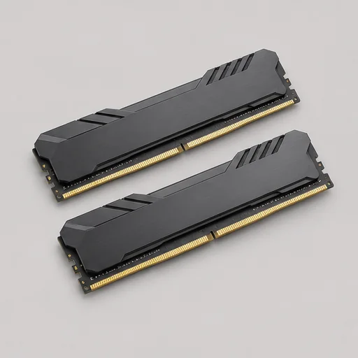

16 oder 32 GB RAM: Wie viel brauchst du wirklich?
Wenn deine Spiele und Programme mit 16 GB flüssig laufen, kannst du den RAM weiter nutzen. Ob sich 32 GB lohnen, hängt davon ab, wie du deinen PC nutzt und ob du ohnehin einen neuen kaufst.

Dein bisheriger PC ist der beste Ausgangspunkt
Wenn deine Spiele mit 16 GB RAM flüssig laufen, kannst du den Speicher erst mal drinlassen. Mit 32 GB passen zwar mehr laufende Programme in den Arbeitsspeicher. Solange du mit 16 GB aber gar nicht ans Limit kommst, wirst du beim Spielen meist wenig vom Upgrade merken.
Beim Neukauf sieht die Rechnung etwas anders aus. Mit 32 GB hast du mehr Reserve, wenn du später anspruchsvollere Spiele spielst oder mehr Programme gleichzeitig nutzt. Wie viel dir diese Reserve wert ist, hängt vom Rest des PCs ab. Wenn deinem Lieblingsspiel vor allem Grafikleistung fehlt, ist ein Teil des Budgets bei der Grafikkarte womöglich besser aufgehoben.
Wann du mit 16 GB weiter gut zurechtkommen kannst
Wenn du beim Spielen nebenbei nur ein paar leichte Programme offen hast, können 16 GB gut reichen. Schau bei neuen Spielen in die empfohlenen Systemanforderungen und prüf, für welche Einstellungen sie gelten.
Bei deinem vorhandenen PC kannst du zusätzlich beobachten, wann es hakt. Wenn das Spiel erst ruckelt, sobald du etwa den Browser oder ein Aufnahmeprogramm öffnest, lohnt sich ein Blick auf die RAM-Auslastung. Läuft es auch mit den Programmen im Hintergrund flüssig, hast du wenig Grund, jetzt schon aufzurüsten.
Auch mit knappem Budget kannst du einen neuen PC mit 16 GB in Betracht ziehen. Wenn du dafür eine bessere Grafikkarte bekommst und deine Spiele mit 16 GB auskommen, kann das für dich die sinnvollere Ausstattung sein.
Was für 32 GB spricht
Mit großen Modpacks, also Sammlungen von Erweiterungen für ein Spiel, kann der Speicherbedarf steigen. Wenn dazu noch die Aufnahme läuft oder viele Browser-Tabs offen sind, teilen sich mehr Programme denselben Arbeitsspeicher.
In solchen Situationen bringen dir 32 GB mehr Luft. Du musst dann seltener etwas schließen, um flüssig weiterspielen oder arbeiten zu können. Mehr FPS bekommst du dadurch aber nur, wenn vorher der Arbeitsspeicher die Leistung gebremst hat.
Wenn du den neuen PC auch für Videoschnitt, Aufnahmen oder Spiele mit vielen Mods nutzt, nimm 32 GB deshalb ruhig mit in den Vergleich. Wäge den Aufpreis zusammen mit der Grafikkarte und dem Rest der Ausstattung ab.
Eine kurze Prüfung statt eines Kaufs auf Verdacht
Um zu sehen, ob dein RAM an seine Grenzen kommt, öffne unter Windows mit Strg + Umschalt + Esc den Task-Manager. Lass deine üblichen Programme neben dem Spiel laufen und schau unter „Leistung“ → „Arbeitsspeicher“ nach, wie viel belegt ist, wenn es ruckelt.
Wird es bei fast vollem RAM nach dem Schließen einiger nicht benötigter Programme wieder flüssiger, kann sich ein Upgrade lohnen. Bleiben die FPS auch danach niedrig, schau dir auch Grafikkarte, CPU und Spieleinstellungen an.
Wenn sich dagegen schon beim Installieren kein weiteres Spiel mehr unterbringen lässt, prüf den Platz auf dem Laufwerk. Die beiden Fälle gehen wir in RAM oder SSD aufrüsten? durch.
Beim Aufrüsten zählt mehr als die Kapazität
Wenn du aufrüsten willst, schau zuerst nach, ob dein PC DDR4 oder DDR5 braucht. Beide Generationen sind nicht austauschbar. Schau auch nach, wie viele RAM-Slots belegt sind, damit du weißt, ob du Riegel ergänzen oder tauschen musst.
Ein Kit aus zwei zusammengehörigen Riegeln kann beim Desktop-PC sinnvoll sein, wenn dein Mainboard diese Bestückung vorsieht. Welche Riegel zusammenpassen und in welche Slots sie gehören, steht im Handbuch. In RAM günstig kaufen gehen wir die Auswahl Schritt für Schritt durch.
Und was ist mit 64 GB oder Grafikspeicher?
Fürs übliche Gaming musst du selten mit 64 GB planen. Interessant wird die Größe bei konkreten Anwendungen, die besonders viel RAM brauchen, etwa bei größeren Arbeitsprojekten.
In PC-Angeboten steht oft noch eine zweite Speichergröße bei der Grafikkarte. Das ist der Grafikspeicher (VRAM), den die Karte zum Beispiel für Texturen nutzt. Wenn ein Spiel bei hohen Grafikeinstellungen mehr VRAM braucht, lässt sich das mit zusätzlichem Arbeitsspeicher allein nicht beheben. Achte beim Vergleich deshalb darauf, welche der beiden Angaben du gerade liest.